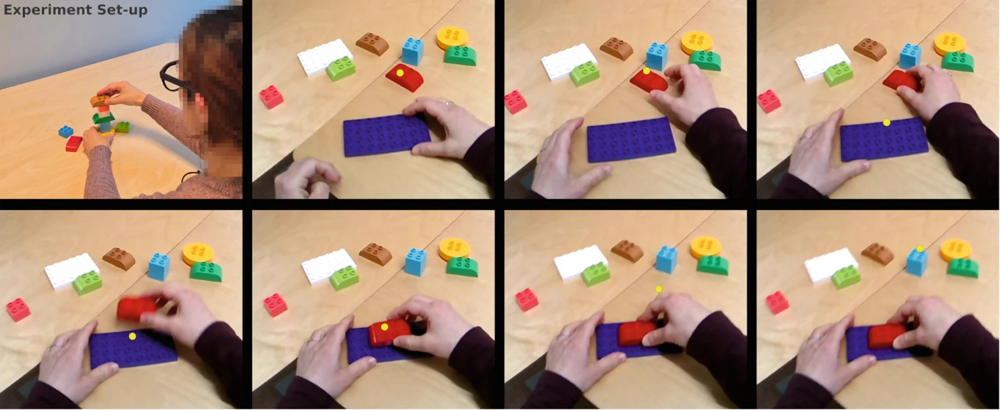

ISVC 2025 · Advances in Visual Computing · 2026
Task-Conditioned
Next-Fixation Prediction
in Assembly Tasks
1 SINTEF Digital 2 Norwegian University of Science and Technology
Trondheim, Norway
Where will we look next when building something?
Predicting human gaze from the scene, the object, and the recent past.
01 / Research
Paper

Attention guided by the task
Human gaze during assembly reflects what we are trying to do. This work models the next eye fixation as a probability distribution, conditioned on a first-person scene image, a template of the task-relevant object, and previous fixations.
We evaluate the predictions with saliency metrics, study the effects of fixation history and center bias, and introduce a task-specific hit-rate measure to assess whether predicted fixations fall on relevant objects.
Cite this paper BibTeX
@inproceedings{tsiourva2026task,
author = {Tsiourva, Maria and Grøtli, Esten Ingar and Johansen, Tor Arne},
title = {Task-Conditioned Next-Fixation Prediction in Assembly Tasks},
booktitle = {Advances in Visual Computing},
series = {Lecture Notes in Computer Science},
volume = {16396},
pages = {322--333},
year = {2026},
publisher = {Springer Nature Switzerland},
doi = {10.1007/978-3-032-14492-8_25}
}Published in Advances in Visual Computing (ISVC 2025), LNCS 16396, pp. 322–333. Publisher record ↗
02 / Implementation
Code
Research implementation
The implementation is not public at this stage. This section will be updated with a repository link when the code is released.
03 / Dataset
Data
LegoFixations
A first-person vision dataset of building-block assembly, pairing scene frames with synchronized gaze coordinates, object annotations, and reference templates.
Access on Figshare- 5,375
- Training & validation scene images
- 9
- Distinct building blocks
- 30 Hz
- Scene video · 1600 × 1200 pixels
- 200 Hz
- Recorded gaze sampling rate
Recorded with the Pupil Labs Neon eye tracker. Gaze samples are matched to scene frames using the nearest timestamp. The study records one participant across multiple assembly runs. The accompanying archive is LegoFixations.zip (approximately 4.17 GB); see Figshare for access and licensing information.